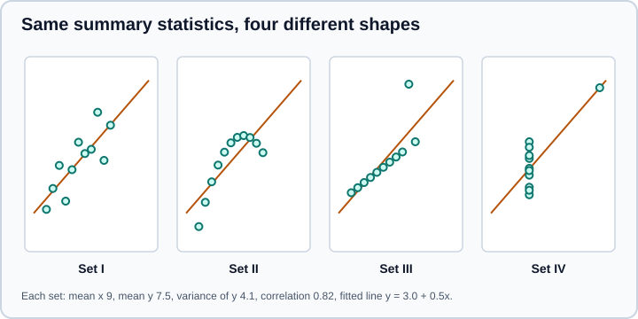

Exploratory Data Analysis
|
This content was generated with the assistance of AI and should be verified against the official documentation before being relied on in production. |
Exploratory data analysis (EDA) is the practice of looking at data, with summaries and with pictures, before and while modelling it. John Tukey introduced the term in his 1977 book Exploratory Data Analysis as a counterweight to purely confirmatory statistics: first find out what the data looks like and what questions it suggests, then test the questions that matter on data that was not used to ask them. The NIST/SEMATECH e-Handbook of Statistical Methods describes EDA as an attitude as much as a set of techniques: let the data speak, and be prepared to be surprised.
Examples target Python 3.13 or 3.14 and were run on Python 3.13. This page targets pandas 3.1, NumPy 2.5, SciPy 1.18, Matplotlib 3.11 and seaborn 0.13, as checked against the official documentation in October 2026. All code was executed on those versions. The previous step is Data Cleaning & Preparation; the next ones are Statistics Fundamentals (to quantify what EDA suggests) and Data Visualization (for the plotting libraries in depth). For R users the equivalents are in descriptive statistics and tests and ggplot2.
What EDA is for
EDA answers a small number of practical questions, in roughly this order:
-
What is in the data? Number of rows and columns, what a row represents, the type and unit of each column, the time span and the population it covers.
-
Is it trustworthy? Missing values, duplicates, impossible values, inconsistent categories, a sudden change in distribution at some date (a system migration, a logging change).
-
What does each variable look like on its own? Centre, spread, shape, skewness, outliers, modes.
-
How do variables relate? Associations, differences between groups, trends over time, interactions.
-
What should happen next? Which cleaning rules, transformations, features, models and statistical tests the data supports, and which questions it cannot answer.
The outcome is not a pile of charts. It is a short list of findings, each with the plot or number that supports it, and a list of decisions that follow from them.
The loop matters: EDA finds data problems that send you back to cleaning, and findings that change the question.
A first look
Every EDA starts with the same few calls. The example below builds a small, reproducible customer table (seeded with
default_rng, so the numbers are the same on every run) and summarises it.
import numpy as np
import pandas as pd
rng = np.random.default_rng(0)
n = 500
df = pd.DataFrame({
"age": rng.integers(18, 75, n),
"income": rng.lognormal(10.3, 0.6, n).round(0),
"segment": rng.choice(["basic", "plus", "pro"], n, p=[0.6, 0.3, 0.1]),
})
df["churned"] = (rng.random(n) < (0.10 + 0.002 * (75 - df["age"])
+ 0.08 * (df["segment"] == "basic"))).astype(int)
print(df.shape)
print(df.describe().round(1))
print(df["segment"].value_counts(normalize=True).round(2))(500, 4)
age income churned
count 500.0 500.0 500.0
mean 47.3 34505.6 0.2
std 16.9 21458.0 0.4
min 18.0 2865.0 0.0
25% 33.0 19483.0 0.0
50% 48.0 28907.5 0.0
75% 62.0 43676.5 0.0
max 74.0 155358.0 1.0
segment
basic 0.61
plus 0.32
pro 0.07
Name: proportion, dtype: float64Source: DataFrame.describe.
Reading the table is a skill. The mean income (34,506) is well above the median (28,908): that gap, together with a
maximum more than three times the 75th percentile, says the distribution is right-skewed, so the mean is a poor summary of a
"typical" customer. describe() summarises numeric columns by default; use include="all" for text and categorical
columns, and df.describe(percentiles=[0.01, 0.05, 0.95, 0.99]) to look further into the tails. The mean of a 0/1
column such as churned is the proportion of ones.
For a heavily skewed variable a logarithm often makes it symmetric. Skewness is a number you can compare:
print(df["income"].skew().round(2), np.log(df["income"]).skew().round(2))Source: Series.skew.
which prints 1.72 -0.17: strongly right-skewed on the raw scale, roughly symmetric after taking logarithms. That is
what a log-normal variable should do, and it is why income, prices and durations are usually modelled on a log scale.
Univariate analysis
Look at one variable at a time, and always show the whole distribution rather than only a mean.
Numeric variables
| Display | Shows | Watch out for |
|---|---|---|
Histogram |
Shape, modes, skew, gaps. |
Bin width changes the story; try several, or use |
Kernel density estimate (KDE) |
A smoothed histogram. |
The bandwidth is a choice; a KDE spills over impossible values (negative ages) and smooths away sharp edges. |
Box plot |
Median, quartiles, fences, flagged points. |
Hides multimodality: a two-humped and a one-humped sample can have identical boxes. |
Violin plot |
A box plot plus the density. |
Shares the KDE caveats; misleading with few points. |
ECDF (empirical cumulative distribution) |
Every value, with no binning or smoothing choice. |
Less familiar to audiences, but the most honest summary of a distribution. |
Strip or swarm plot |
Individual points. |
Over-plotting above a few hundred points. |
Two further checks are standard. The Q-Q plot compares sample quantiles with those of a theoretical distribution;
points on a straight line mean the distribution matches. The straightness can be summarised by the correlation of the
points, which scipy.stats.probplot returns:
import matplotlib.pyplot as plt
import numpy as np
import seaborn as sns
from scipy import stats
rng = np.random.default_rng(0)
x = rng.lognormal(0, 0.8, 300)
fig, ax = plt.subplots(1, 3, figsize=(12, 3.5), layout="constrained")
sns.ecdfplot(x=x, ax=ax[0])
stats.probplot(x, dist="norm", plot=ax[1]) # curved: not normal
stats.probplot(np.log(x), dist="norm", plot=ax[2]) # straight: log-normal data
_, (_, _, r_raw) = stats.probplot(x, dist="norm")
_, (_, _, r_log) = stats.probplot(np.log(x), dist="norm")
print(round(r_raw, 3), round(r_log, 3))This prints 0.836 0.998. The raw log-normal sample departs from a normal line; its logarithm is almost perfectly straight.
Source: scipy.stats.probplot and
seaborn.ecdfplot. Formal normality tests (Shapiro-Wilk,
Anderson-Darling) are covered in Statistics Fundamentals; in EDA the plot is usually more
informative than a p-value, because with a large sample a test rejects normality for departures too small to matter.
Categorical variables
For a categorical column look at counts and proportions, the number of distinct values, rare levels and near-duplicates
("Spain" and "spain "). value_counts(dropna=False) includes missing values as a category, which is often the most
interesting row. A bar chart sorted by count is usually clearer than a pie chart, and very high cardinality columns (user
ids, free text) are identifiers or text, not categories.
Bivariate analysis
Numeric against numeric
A scatter plot is the default. Add a smoother or regression line only after looking at the raw points, and use
transparency or a 2-D histogram (sns.histplot(x=col_a, y=col_b)) when points overlap. The numeric summary of a
relationship is a correlation coefficient. Choose it knowingly:
| Coefficient | Measures | Notes |
|---|---|---|
Pearson ( |
Strength of a linear relationship. |
Sensitive to outliers and to curvature. Between -1 and 1. |
Spearman ( |
Strength of a monotonic relationship, using ranks. |
Robust to outliers and to any monotonic transformation. |
Kendall ( |
Agreement in the ordering of pairs. |
Slower, with a clearer interpretation on small samples and many ties. |
print(df[["age", "income", "churned"]].corr(method="pearson").round(2))
print(df[["age", "income", "churned"]].corr(method="spearman").round(2))
print(df.groupby("segment")["churned"].agg(["mean", "count"]).round(3))
print(pd.crosstab(df["segment"], df["churned"], normalize="index").round(2)) age income churned
age 1.00 -0.02 0.01
income -0.02 1.00 0.01
churned 0.01 0.01 1.00
age income churned
age 1.00 -0.03 0.00
income -0.03 1.00 0.03
churned 0.00 0.03 1.00
mean count
segment
basic 0.224 303
plus 0.156 160
pro 0.189 37
churned 0 1
segment
basic 0.78 0.22
plus 0.84 0.16
pro 0.81 0.19Source: DataFrame.corr.
The correlations are all close to zero, yet the group table shows that "basic" customers churn at 22 percent against 16 percent for "plus". A correlation matrix looks only at pairs of numeric columns, and a binary outcome mixed with two continuous variables is the weakest case for it. Group summaries and cross-tabulations belong beside every correlation matrix. Note also the counts: 37 "pro" customers is too few for the 19 percent to be distinguishable from the others, a point that Statistics Fundamentals makes precise with confidence intervals.
Numeric against categorical
Compare the distribution in each group, not only the means: overlaid ECDFs or KDEs, side-by-side box or violin plots, and a table of count, mean, median and a spread measure per group. Watch group sizes; a mean of 12 observations is a rumour.
Categorical against categorical
A cross-tabulation (pd.crosstab with normalize="index" for row percentages) and a stacked or grouped bar chart.
Normalise in the direction of your question: "of the customers in each segment, what share churned?" is a row
percentage; "of the churners, which segments are they in?" is a column percentage, and the two answer different questions.
Time
For data indexed by time, plot the series against time first, and then look at seasonality (by hour, weekday, month), trend, level shifts and gaps. A change in the mean at one date is more often a change in how data was collected than a change in the world. See Time Series & Dates.
Multivariate analysis
Two variables seldom tell the whole story. Useful tools are a pair plot (every pair of columns in a grid, with
hue for a categorical variable), a correlation heatmap, and faceting (one panel per group). Pandas has
pd.plotting.scatter_matrix, seaborn sns.pairplot, sns.heatmap, and the figure-level functions relplot, displot
and catplot, which all take col= and row= for facets.
import matplotlib.pyplot as plt
import numpy as np
import pandas as pd
import seaborn as sns
rng = np.random.default_rng(0)
data = pd.DataFrame({"x": rng.normal(size=300)})
data["y"] = 0.6 * data["x"] + rng.normal(scale=0.8, size=300)
data["g"] = rng.choice(["a", "b"], 300)
fig, axes = plt.subplots(1, 3, figsize=(12, 3.5), layout="constrained")
sns.histplot(data, x="x", kde=True, ax=axes[0])
sns.boxplot(data, x="g", y="y", ax=axes[1])
sns.heatmap(data[["x", "y"]].corr(), annot=True, vmin=-1, vmax=1, cmap="vlag", ax=axes[2])
fig.savefig("eda.png", dpi=80)
grid = sns.pairplot(data, hue="g", corner=True)
grid.savefig("pair.png", dpi=60)Source: seaborn, Visualizing distributions, seaborn, Overview of seaborn plotting functions and seaborn.pairplot.
The seaborn distinction worth remembering: axes-level functions (histplot, boxplot, heatmap) draw on a
Matplotlib Axes that you can pass with ax=, so they compose into your own layout; figure-level functions
(displot, relplot, catplot, pairplot) create their own figure, return a grid object, and are the quick route to
facets. Diverging colour maps such as vlag suit correlations because they are centred on zero. Use layout="constrained"
in plt.subplots to avoid overlapping labels, and always save with an explicit dpi or vector format.
A short guide to choosing a display:
| Question | Start with |
|---|---|
How is one number distributed? |
Histogram or ECDF, with a box plot for the outliers. |
How do groups differ? |
Box, violin or ECDF per group, with the group sizes. |
Do two numbers move together? |
Scatter plot, then a correlation coefficient, then a group split. |
How does a number change over time? |
Line plot, then decomposition by period. |
How are parts of a whole composed? |
Sorted bar chart (stacked only for a few parts). |
What is the relationship between many variables? |
Pair plot or heatmap, then follow up on one pair. |
Why summary statistics are not enough
Anscombe’s quartet (Francis Anscombe, 1973) is four small datasets of 11 points with almost identical summary statistics and four completely different shapes. Computing them is a one-minute demonstration of why EDA starts with pictures.
import numpy as np
import pandas as pd
x123 = [10, 8, 13, 9, 11, 14, 6, 4, 12, 7, 5]
data = {
"I": (x123, [8.04, 6.95, 7.58, 8.81, 8.33, 9.96, 7.24, 4.26, 10.84, 4.82, 5.68]),
"II": (x123, [9.14, 8.14, 8.74, 8.77, 9.26, 8.10, 6.13, 3.10, 9.13, 7.26, 4.74]),
"III": (x123, [7.46, 6.77, 12.74, 7.11, 7.81, 8.84, 6.08, 5.39, 8.15, 6.42, 5.73]),
"IV": ([8, 8, 8, 8, 8, 8, 8, 19, 8, 8, 8],
[6.58, 5.76, 7.71, 8.84, 8.47, 7.04, 5.25, 12.50, 5.56, 7.91, 6.89]),
}
rows = []
for name, (x, y) in data.items():
x, y = np.array(x), np.array(y)
slope, intercept = np.polyfit(x, y, 1)
rows.append({"set": name, "mean_x": x.mean(), "mean_y": y.mean(), "var_y": y.var(ddof=1),
"corr": np.corrcoef(x, y)[0, 1], "slope": slope, "intercept": intercept})
print(pd.DataFrame(rows).round(2).to_string(index=False))set mean_x mean_y var_y corr slope intercept
I 9.0 7.5 4.13 0.82 0.5 3.0
II 9.0 7.5 4.13 0.82 0.5 3.0
III 9.0 7.5 4.12 0.82 0.5 3.0
IV 9.0 7.5 4.12 0.82 0.5 3.0Source: F. J. Anscombe, "Graphs in Statistical Analysis", The American Statistician 27(1), 1973; seaborn ships the same data
as sns.load_dataset("anscombe") (it downloads the file on first use).

Set I is the textbook linear relationship. Set II is a perfect curve that a straight line describes badly. Set III is a
tight line pulled off course by one outlier. In set IV every x is 8 except one, so the whole fit hangs on a single
point. The same lesson applies to every summary in describe(): plot first, then summarise.
Correlation is not causation
A correlation says two variables move together in the data. It does not say that one produces the other. Four common
explanations for an association between A and B are that A causes B, that B causes A, that a third variable
causes both (a confounder), or that the pattern is chance, especially after trying many pairs. Ice-cream sales and
drownings correlate because both rise in summer.
Simpson’s paradox is the most striking consequence: a trend that appears in every group can reverse when the groups are combined, because the groups have different sizes and different baseline rates.
import pandas as pd
df = pd.DataFrame({
"dept": ["A", "A", "B", "B"],
"group": ["x", "y", "x", "y"],
"applied": [100, 20, 20, 100],
"admitted": [80, 18, 4, 25],
})
by = df.assign(rate=df["admitted"] / df["applied"])
print(by.round(2))
tot = df.groupby("group")[["applied", "admitted"]].sum()
print((tot["admitted"] / tot["applied"]).round(2)) dept group applied admitted rate
0 A x 100 80 0.80
1 A y 20 18 0.90
2 B x 20 4 0.20
3 B y 100 25 0.25
group
x 0.70
y 0.36
dtype: float64Group y has the higher admission rate in both departments (0.90 against 0.80, and 0.25 against 0.20), yet the pooled rate is 0.70 for x and 0.36 for y, because y applied mostly to the department with the low rate. Neither the pooled nor the per-department number is "the truth": which one answers the question depends on the causal story, which the data alone does not contain. EDA should therefore stratify by plausible confounders, and any claim of an effect needs a designed experiment or an explicit causal analysis, not a correlation matrix.
The NIST four-plot
The NIST handbook proposes a compact EDA routine for a univariate measurement series: a run sequence plot (value against order, to see shifts and trends), a lag plot (each value against the previous one, to see autocorrelation), a histogram (shape) and a normal probability plot (normality). Together they check the usual assumptions that a measurement is stable, independent, identically distributed and normal.
import matplotlib.pyplot as plt
import numpy as np
from scipy import stats
rng = np.random.default_rng(10)
y = 10 + rng.normal(0, 1, 200)
fig, ax = plt.subplots(2, 2, figsize=(9, 6), layout="constrained")
ax[0, 0].plot(y)
ax[0, 0].set(title="Run sequence", xlabel="index", ylabel="y")
ax[0, 1].scatter(y[:-1], y[1:], s=8)
ax[0, 1].set(title="Lag plot", xlabel="y[i-1]", ylabel="y[i]")
ax[1, 0].hist(y, bins=20)
ax[1, 0].set(title="Histogram")
stats.probplot(y, dist="norm", plot=ax[1, 1])
fig.savefig("fourplot.png", dpi=60)
print("lag-1 autocorrelation", round(np.corrcoef(y[:-1], y[1:])[0, 1], 3))For this independent normal series the lag-1 autocorrelation is 0.083, close to zero, and the lag plot is a shapeless
cloud. Source: NIST/SEMATECH e-Handbook, 4-plot and
Exploratory Data Analysis.
Pitfalls
-
Looking only at averages. Means hide skew, multimodality and subgroups. Always pair them with a distribution plot.
-
Over-plotting. Thousands of points become a solid blob. Use transparency, hexbin or 2-D histograms, or sample.
-
Garden of forking paths. Looking at dozens of plots and tests, then reporting the one that "worked", produces patterns that are noise. Note how many comparisons you made, and confirm findings on held-out data.
-
Peeking at the test set. EDA that informs modelling choices belongs to the training data only. Split first when the EDA will drive features or thresholds; see Model Evaluation & Validation.
-
Dropping missing values silently. Many plotting functions skip
NaN. If 30 percent of a column is missing, the chart describes a different population than the table. -
Truncated and dual axes. A bar chart that does not start at zero exaggerates differences; a second y-axis invites false correlations.
-
Unrepresentative samples. A sample of the first 10,000 rows of a file sorted by date is not a random sample. Use
df.sample(n, random_state=0)for a random subset. -
Mistaking an artefact for a signal. Spikes at round numbers (heaping), at default values, or at a date when a system changed are properties of the measurement process.
Automating a first pass
Profiling tools generate a report with summaries for every column. They are useful for a first look at an unfamiliar table, and a poor substitute for thinking about the question. Whatever tool is used, keep the EDA reproducible: put it in a script or notebook that runs top to bottom with a fixed random seed, record the findings in prose next to the plots, and move any cleaning rule that EDA justifies into the cleaning code. See Jupyter Notebooks & JupyterLab.
Where older tutorials and books are outdated
| Older pattern | Current practice |
|---|---|
|
|
The state-machine style, |
|
|
|
|
|
|
Modern Jupyter shows Matplotlib figures by default; the magic is rarely needed. |
Reading the data with Python 2 style |
Python 3 and |
References
-
NIST/SEMATECH e-Handbook of Statistical Methods, Exploratory Data Analysis chapter, What is EDA? and 4-plot
-
seaborn, Visualizing distributions of data, Overview of seaborn plotting functions, Visualizing statistical relationships
-
pandas, DataFrame.describe, DataFrame.corr
-
SciPy, scipy.stats.probplot
-
Wickham, Cetinkaya-Rundel and Grolemund, R for Data Science, Exploratory data analysis
-
J. W. Tukey, Exploratory Data Analysis, Addison-Wesley, 1977
-
F. J. Anscombe, "Graphs in Statistical Analysis", The American Statistician 27(1), 1973